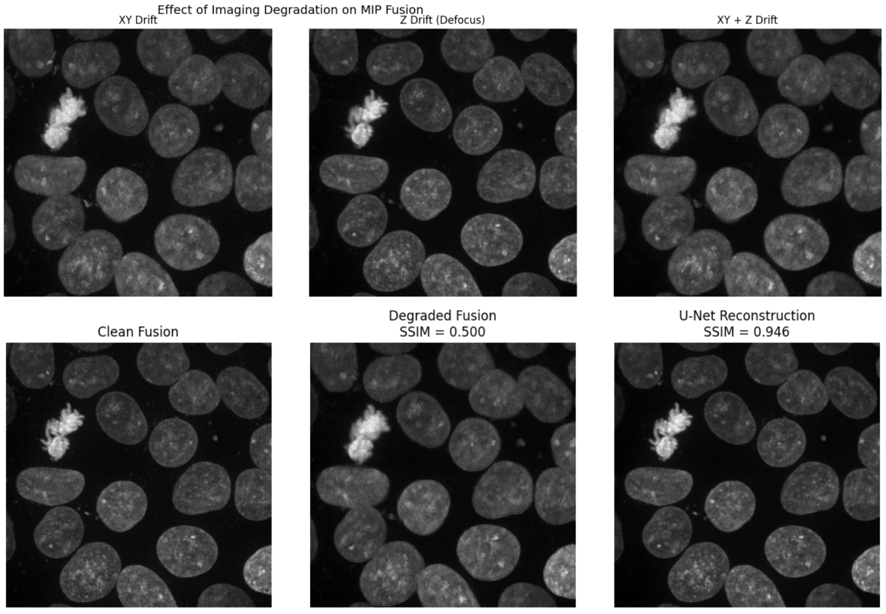

| Paper PDF |

|
Microscopy imaging often relies on z-stacks to capture three-dimensional biological structures, but physical drift during acquisition can degrade the final fused image. In this project, I simulated two common degradation sources: XY stage drift, which causes spatial misalignment, and Z drift, which produces defocus blur. Using these simulated distortions, I trained a lightweight U-Net model to reconstruct a clean maximum intensity projection from a degraded z-stack. The model substantially improved structural similarity between the degraded and clean images, increasing SSIM from about 0.51 to about 0.95. However, sharpness measured by Laplacian variance was only partially recovered, suggesting that high-frequency details remain challenging to restore. This project demonstrates how physically motivated simulation can be used to generate training data for microscopy image reconstruction. |
|
|
| Paper: |
Code and Data:
|